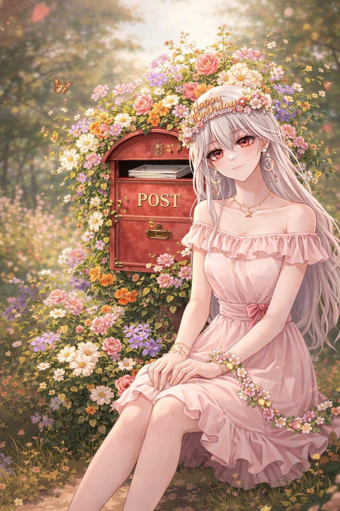

매일 아침 눈 뜨기가 너무 힘들었는데 너를 알게 된 이후로 오히려 기다려지는것 같아 무료하던 나의 일상에 찾아와준 네게 고마워 자면서 듣는 경우가 대부분이지만 항상 기분 좋은 꿈을 꾸는 나를 보면, 잠든 와중에도 네 목소릴 들으며 행복함을 느끼고 있었구나 하는 생각이 들어 오래도록 방송해 주라 예쁜 목소리 매일 매일 듣고 싶어ㅎ 항상 응원할게 지금껏 전하고 싶었지만 기회가 없어 담아두고 있던 마음을 네 생일을 빌려 이렇게 전해. 오늘도 좋은 하루 보내 그리고 생일 축하해.
리아님 생일 축하해요! 곧 생일이라고 들었는데 이렇게 축하할수 있어서 좋네요. 오늘 하루 누구보다 행복하고 즐거운 하루 보내셨으면 좋겠습니다 자주봐요!!
우리 귀여운 리아 생일이넹 생일 너무 축하행😘😘 리아 아직 스푼 시작한지 얼마 안됐지만 벌써부터 하루시작과 끝이 리아여서 너무 행복행 앞으로 방송 열심히하장❤️🧡💛💓💞💕
생일 축하합니다 태어나주셔서 감사합니다 앞으로도 무한한 포옹
안녕! 일단 2n번째 생일 축하하고 항상 장난치지만 진심은 아닌거 알지? (내가 도파민 중독자라..ㅇㅊㅊ) 맛있는거 많이먹고! 이젠 아프지마라 생일 선물은 나야>< PS. 아참 내 생일은 5월달이야..(기대할께 >_<)
리아야 안녕, 생일인줄도 몰랐네 리아랑 친해진지는 얼마 안되었는데 좀 많이 가까워진것 같아! 하는게임도 비슷하고, 먼저 많이 다가와줘서 그런가? 😚 그래서 그런지 더더 친해지고 싶은 나의 욕심이 드네 내년 생일도, 2년 뒤 생일도 계속계속 같이 보내자 ~.~ 항상 행복만해 !! 오늘 맛있는거 많이 먹고 건강하자 다시 한번 생일 너무너무 축하해 🎉🎉 - dora.